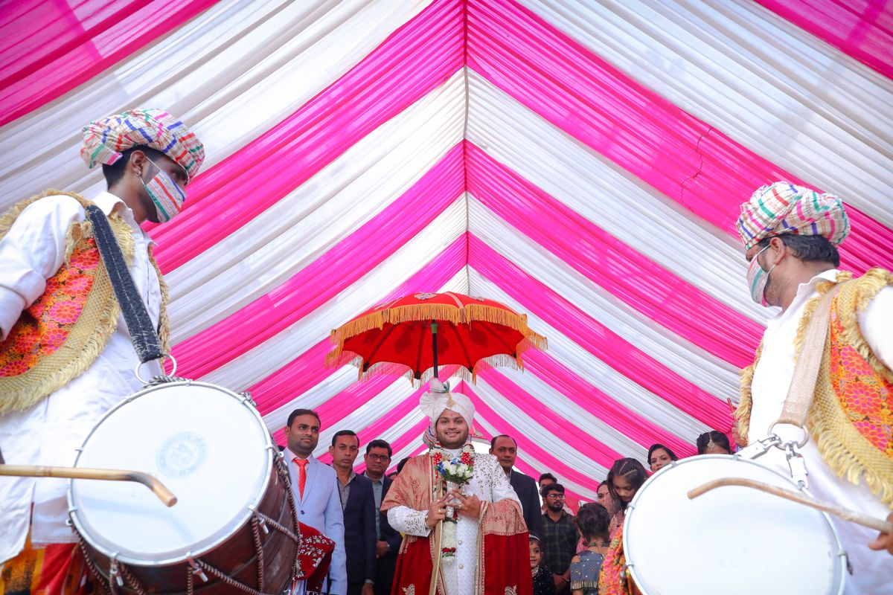

Case 01 — Leicester
The 400-guest baraat
The brief
A full wedding day: an outdoor baraat from the car park to the venue doors with 400 guests and the groom on horseback, then the entrance and the full evening inside. Forty-five minutes of continuous procession playing — the longest single set on the sheet.
The decisions
Two players, rotating every twelve minutes. A dhol weighs about nine kilos and baraat volume is sprint work; one player cannot hold it for 45 minutes and still have anything left for the night. The route was walked with the planner the week before, with two agreed bunching points where the procession naturally stops and restarts. The entrance cue was rehearsed with the DJ in the afternoon: the drum stops on the doors, the DJ takes the room — no overlap, no gap.
The outcome
The groom ran twenty minutes late; the slack built into the route absorbed it, and the procession landed at the doors at 17:47 against a revised 17:45. The entrance hit on the first beat. The planner’s words about this evening are on the home page.